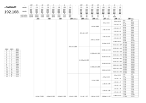

Taháky¶
- Příkazy pro Linux a Router OS
- Malá pomůcka pro dělení na podsítě
- 
Pracovní listy¶
- Všechny pracovní listy v jediném souboru:
- vse.pdf.
- Připojení do sítě:
-

- Směrování – Linux router:
-
- Směrování – spousta místa pro vaše poznámky:
-
- Směrování s dělením na podsítě:
-


Video-návody¶
Maska sítě¶
Síťování ve Virtualboxu¶
- Toto je více méně poslední video, ale možná jím budete chtít začít
- VirtualBox jako malá síťová laboratoř
- Z uživatelského hlediska nejjednodušší nastavení sítě je NAT
- VirtualBox a NAT
- Více možností pro síťování dává nastavení Host-only, Network bridge a Internal network
- Host-only, Network bridge, Internal network
- Jak připojit PC do sítě?
- Připojení do sítě
- Směrování… a jak funguje Internet
- Směrování. Jak funguje Internet
- Něco málo o protokolu ARP
- ARP ]
- VirtualBox jako malá síťová laboratoř
- Síťová laboratoř
- Nastavení DHCP serveru na Mikrotik RoterBoardOS.
- DHCP server